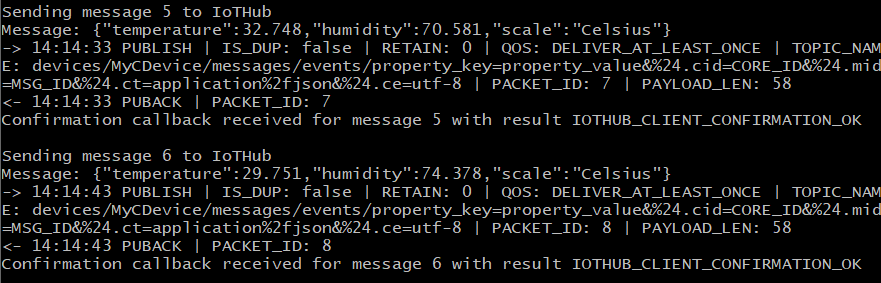
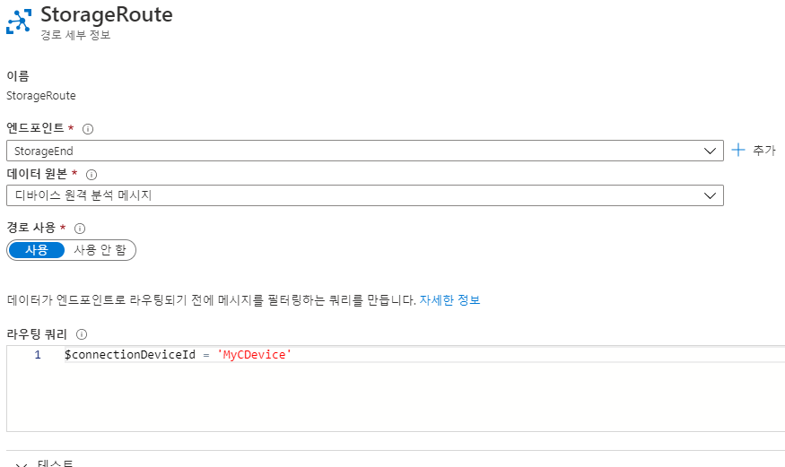
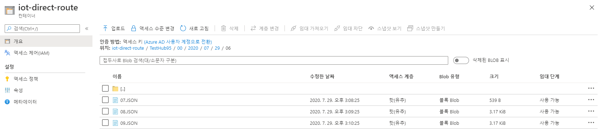

지난 포스팅에서 Azure에서 제안하는 IoT 아키텍처를 소개하고, 각 구성 요소를 살펴보았습니다. 이번에는 예제 애플리케이션을 사용하여 원격 장치 데이터를 IoT 허브로 전송하는 방법을 알아보겠습니다. 해당 예제의 시뮬레이터는 MQTT를 통해 IoT 허브로 온습도 정보를 1초에 한 번 전송하도록 구성되어 있습니다.
목차는 다음과 같습니다.
- 실습 환경 설정
- SDK 다운로드 및 빌드
- IoT 허브 생성 및 디바이스 등록
- 허브에서 데이터 읽기
- 스토리지 계정으로 메시지 라우팅
1. 실습 환경 설정
- Visual Studio 2019 설치 - C++를 사용한 데스크톱 개발 워크로드 사용 설정
- 최신 버전의 Git 설치
- 애플리케이션을 실행할 환경의 방화벽에서 8883 포트를 열어 MQTT 프로토콜 통신 허용
- 운영 체제에 맞는 CMake 빌드 시스템 다운로드하고 환경 변수에 추가
2. SDK 다운로드 및 빌드
- Git Bash에서 다음 명령을 이용해 Azure IoT C SDK GitHub 리포지토리의 최신 버전을 클론합니다. (작성일 기준 : LTS_07_2020_Ref01)
git clone -b LTS_07_2020_Ref01 https://github.com/Azure/azure-iot-sdk-c.git
cd azure-iot-sdk-c
git submodule update --init
- Git 리포지토리 루트 디렉터리에 하위 디렉터리를 만들고 해당 폴더로 이동하여 SDK 버전을 빌드합니다.
mkdir cmake
cd cmake
cmake ..
3. IoT Hub 생성 및 디바이스 등록
IoT Hub 생성
- Azure 포털에서 IoT 허브를 검색하여 만들기를 선택합니다. 지금은 테스트용으로 제공되는 Free Version을 사용해도 됩니다. 서비스를 운용하기 위한 계층은 다음 링크를 참고하여 선택합니다.
IoT 허브 계층 선택 - 디바이스 관리를 위한 IoT Edge를 사용하거나, 디바이스와 IoT 허브 양방향 통신 기능이 필요한 경우라면 표준 계층(S1~S3)을 선택해야 합니다.
- Cloud Shell 창의 Bash 셸에서 다음 명령을 실행하여 IoT 디바이스 ID를 생성합니다.
az extension add --name azure-iot #Azure IoT 확장 사용
az iot hub device-identity create --hub-name <Your IoT Hub name> --device-id MyCDevice #MyCDevice라는 디바이스 ID 생성
- 생성된 IoT 디바이스의 연결 문자열을 확인합니다.
az iot hub device-identity show-connection-string --hub-name <Your IoT Hub name> --device-id MyCDevice --output table
디바이스 등록
- Git Bash에서 아래 경로의 소스 파일을 열어 샘플 코드를 수정합니다.
azure-iot-sdk-c\iothub_client\samples\iothub_convenience_sample\iothub_convenience_sample.c
-
static const char* connectionString = “[device connection string]"; 부분을 찾아 연결 문자열로 대체합니다.
-
CMake 디렉터리의 iothub_convenience_sample 프로젝트 디렉터리로 이동합니다.
cd azure-iot-sdk-c/cmake/iothub_client/samples/iothub_convenience_sample
- 시뮬레이션된 디바이스 애플리케이션을 빌드합니다.
cmake --build . --target iothub_convenience_sample --config Debug
- 빌드 결과물을 실행합니다.
Debug/iothub_convenience_sample.exe

4. 허브에서 데이터 읽기
- Cloud Shell 창의 Bash 셸에서 다음 명령을 실행하여 IoT 허브 메시지를 연결하여 읽어옵니다.
az iot hub monitor-events --hub-name <Your IoT Hub name> --output table
5. 스토리지 계정으로 메시지 라우팅
IoT Hub에는 메시지 라우팅 기능이 있습니다. 사용자 지정 엔드포인트로 Azure Storage Container, Event Hub, Service Bus Queue 및 Topic을 지원합니다. 쿼리 기반으로 메시지를 라우팅할 수 있고, 쿼리에 맞는 엔드포인트가 없으면 Event Hub와 호환되는 기본 제공 엔드포인트로 메시지를 보냅니다. 이 기능을 사용하면 여러 IoT 장치에서 오는 메시지를 나눠서 저장할 수 있습니다. 또한, 메시지를 여러 엔드포인트에 전송하여 분석이나 알람 등 추가 작업을 수행할 수 있습니다.
해당 예제에서는 스토리지 계정의 컨테이너를 엔드포인트로 지정합니다.
-
스토리지 계정에 메시지를 저장할 컨테이너를 생성합니다.
-
IoT Hub 메뉴에서 메시지 라우팅을 선택하여 추가를 클릭합니다.
-
엔드포인트 선택 창 옆의 +추가를 클릭하고, 유형을 스토리지로 선택합니다.
-
앞서 생성한 컨테이너를 지정하고 인코딩 형식을 지정합니다. (AVRO와 JSON 지원)
-
라우팅 쿼리 기본 값은 true로 설정되어 있습니다. 이를 그대로 사용하면 허브로 오는 모든 메시지를 스토리지 계정으로 라우팅합니다.

$connectionDeviceID = ‘MyCDevice’ 처럼 지정하면 특정 IoT 장치(MyCDevice)에서 들어오는 메시지만 저장할 수 있습니다. 쿼리문 참고 문서
- 애플리케이션 실행 후 결과를 확인합니다.

참고 : 테스트 결과, 애플리케이션 실행 결과를 스토리지 계정에 저장하는 작업은 1분 미만 소요됩니다.
지금까지 온습도 정보를 보내는 시뮬레이터를 생성하여 IoT 허브와 연결하고, 스토리지 계정에 라우팅하는 방법을 알아보았습니다.
다음 포스팅에서는 Azure Stream Analytics job에 원격 장치 데이터를 전송하는 방법을 소개하겠습니다.